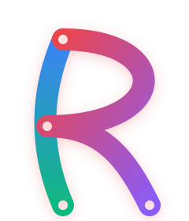

3 postsmarkdownPractical language design, one proof path at a time.
The blog publishes technical notes that connect Rasa's language philosophy to working examples, runtime behavior, and inspectable system artifacts.
Rasa Data Scripts: A Practical Checkpoint
A small Data Scripts checkpoint showing file IO, JSON, EDN, HTTP, process input, runtime-Wasm parity, and browser fetch through admitted capabilities.
July 2, 2026
Read article
Building Rasa / 2
Rasa in the Browser: The Same Runtime, A New Host
How Rasa now runs in browser pages through the ras.wasm component, generated WIT adapter assets, and explicit browser capability providers.
June 30, 2026
Read article
Building Rasa / 1
Rasa, Capabilities, and Controlled Execution
The first Rasa technical note: why Rasa keeps source semantics pure while making host effects explicit, inspectable, and portable across native and Wasm execution.
June 30, 2026
Read article